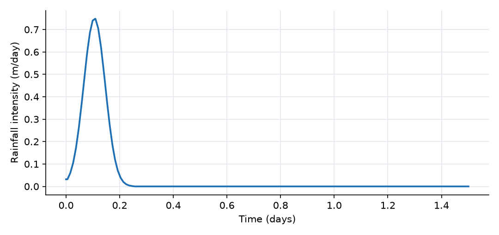
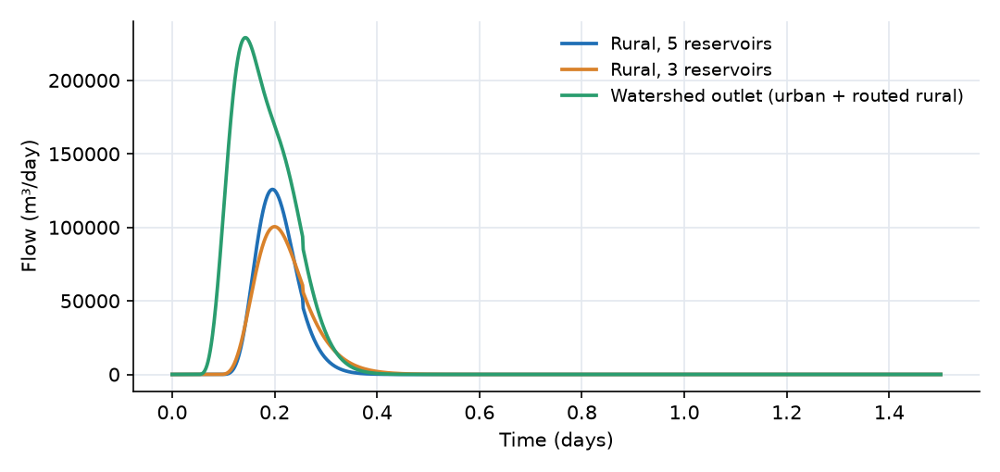
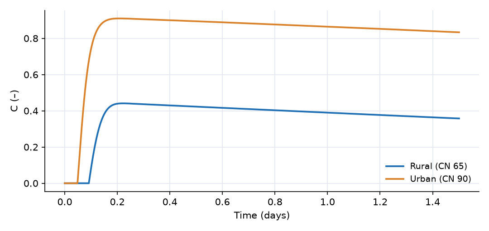
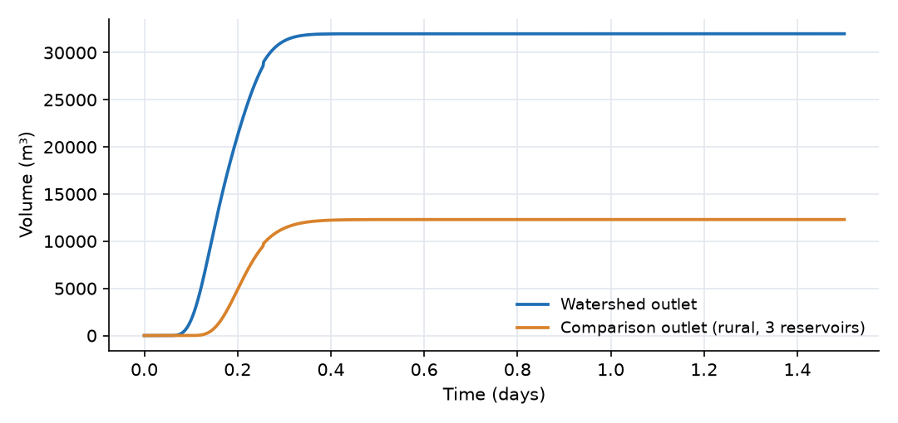

What this model represents
This model applies the classical NRCS (formerly SCS) Curve Number method to a small two-part watershed during a single design storm. An upstream rural sub-watershed (100 ha, CN 65, for example pasture and woodland on moderately permeable soil) drains through a downstream urban sub-watershed (40 ha, CN 90, a densely developed area). The urban outlet is the watershed outlet. A third catchment, Rural_3res, repeats the rural parameters with a shorter routing cascade, so that the effect of hydrograph shape can be seen on its own.
The Curve Number method is the standard tool for design-storm runoff in small watersheds (TR-55, TR-20, HEC-HMS). The model shows how OpenHydroQual turns this event method into a continuous simulation and how a watershed is built by chaining catchments.
How it works
Each catchment is a composite block. CN_Catchment contains one abstraction store (Retention) and five linear reservoirs (R1 to R5). CN_Catchment_3 is identical except that it has three reservoirs. Rain falls on the surface reservoir R1. Members appear in the output with the catchment name as a prefix, for example Rural__Retention_C or Urban__R1_Storage.
Retention and runoff fraction. The Curve Number sets the maximum retention S and the initial abstraction Ia (both in m):
S = 25.4/CN − 0.254, Ia = 0.2·S
which gives S = 136.8 mm and Ia = 27.4 mm for the rural catchments, and S = 28.2 mm and Ia = 5.6 mm for the urban one. The Retention member stores the abstracted volume V_W. Its depth W = V_W/A sets the instantaneous runoff fraction
C = max(1 − ((S + Ia − W)/S)², 0)
The internal partition link moves the abstracted part of the rainfall, i·A·(1 − C), from R1 into Retention, where i is the rainfall intensity and A the catchment area. The rest, i·A·C, stays in R1 and becomes runoff. While W < Ia the bracket is negative, so C = 0 and all rain is abstracted. Once W passes Ia, C rises toward 1 as W approaches 1.2·S. Integrated over a storm, this rate form gives exactly the Curve Number equation for the cumulative runoff depth Q (the technical guide has the derivation):
Q = (P − Ia)² / (P − Ia + S) for P > Ia, where P is the cumulative rainfall depth
Recovery. The abstraction store drains as dV_W/dt = −k·V_W, with the recovery coefficient k = 0.1 1/day. This lets the method run continuously over several storms. The drained water leaves the model. Over a single 1.5-day event its effect is small.
Routing (Nash cascade). Runoff is routed through n equal linear reservoirs, each with outflow Storage/K. The outlet link (CN_outlet) carries the discharge of the last reservoir. The residence time K comes from the NRCS lag equation, written for a flow length ℓ in m, slope s in m/m and lag L in days:
L = ℓ^0.8 · (1000/CN − 9)^0.7 / (176300 · √s), K = L/(n − 1)
With K = L/(n − 1) the impulse response (a gamma distribution) peaks exactly at the lag for any n. Here:
| Catchment | n | Lag L | K per reservoir |
|---|---|---|---|
| Rural | 5 | 1.26 h | 18.9 min |
| Rural_3res | 3 | 1.26 h | 37.7 min |
| Urban | 5 | 0.48 h | 7.2 min |
With n = 5 the peak of the response is close to the peak of the NRCS dimensionless unit hydrograph. With n = 3 the peak is lower and the recession longer.
Two composites, one difference. CN_Catchment and CN_Catchment_3 take the same properties and compute the same runoff volume. They differ only in the number of routing reservoirs, and therefore only in the shape of the hydrograph. Use the 5-reservoir version to reproduce NRCS peak flows. Use the 3-reservoir version where fewer state variables matter more than the peak, for example in large models.
Chaining. The CN_outlet link from Rural enters the surface reservoir R1 of Urban. This inflow is not partitioned (the partition link acts only on rainfall), so the rural runoff is routed through the urban cascade on its way to the outlet. Flows are in m³/day, the model's internal unit (86,400 m³/day = 1 m³/s).
What to look for in the results
- Initial abstraction. The urban runoff fraction leaves zero after 5.6 mm of rain, about 1.2 hours into the storm. The rural one stays at zero until 27.4 mm has fallen, about 2.2 hours in, just before the most intense rain. The rural catchment produces no runoff at all during the first part of the storm.
- Runoff volumes. The final volumes are 12,300 m³ for the rural catchment (12.3 mm, 16% of the rain) and 32,000 m³ for the whole watershed, of which 19,700 m³ (49.3 mm, 66% of the rain) comes from the urban area. The Curve Number equation gives 12.31 mm and 49.30 mm. The rural catchment is 2.5 times larger but produces less runoff than the urban one.
- Peak timing. The rainfall peaks between 2.50 and 2.75 h. The watershed outlet peaks at 3.4 h (229,000 m³/day, 2.65 m³/s), driven by the fast urban response. Rural runoff peaks at the urban inlet at 4.7 h (126,000 m³/day, 1.46 m³/s). Its lag is longer, and its rainfall excess comes late in the storm because C grows with cumulative rain. The routed rural water gives the watershed hydrograph its raised falling limb.
- Cascade length.
Rural_runoff(n = 5) andRural_3res_hydrograph(n = 3) carry the same volume and peak at about the same time (4.7 h and 4.8 h), but the 3-reservoir peak is 20% lower (1.16 m³/s) and its recession is longer. - Recovery. After the rain stops the runoff fraction falls slowly as the abstraction store empties at 10% per day.
Assumptions and limitations
- The closure Ia = 0.2·S is fixed. Antecedent moisture is represented only through the initial abstraction depth (zero here, a dry start). There is no AMC I/II/III switching.
- Rainfall is uniform over each catchment.
- The model produces direct runoff only. There is no baseflow, the abstracted water is not tracked as soil moisture, and water removed by recovery leaves the model.
- The lag equation is calibrated for catchments below about 800 ha with CN between 50 and 95. Both catchments are inside that range.
- There is no channel routing between the two sub-watersheds. The rural hydrograph enters the urban cascade directly, so the urban lag also delays the rural runoff.
- The cascade matches the NRCS peak ordinate, not every ordinate of the dimensionless unit hydrograph.
Model diagram
Hover a block or link to see its name and type. Arrows show the positive flow direction.
Components
Click a component to see every property set in the model file, with units and meaning.
Blocks 2
Storage compartments: each holds water (and dissolved or particulate mass) and has a state that evolves in time.
Watershed_outletfixed_headFixed-head boundary that receives the combined hydrograph. Its storage starts at zero, so it accumulates the total runoff volume leaving the watershed.
fixed_head: Fixed-head boundary
| Property | Value | Unit | Meaning |
|---|---|---|---|
| Head | 0 | m | |
| Initial Storage | 0 | m3 |
Comparison_outletfixed_headFixed-head boundary for the comparison catchment. Its storage accumulates the runoff volume of Rural_3res.
Rural_3res.fixed_head: Fixed-head boundary
| Property | Value | Unit | Meaning |
|---|---|---|---|
| Head | 0 | m | |
| Initial Storage | 0 | m3 |
Composite blocks 3
Pre-assembled groups of blocks and links that behave as a single unit.
RuralCN_Catchment · cn_catchmentAn upstream rural sub-watershed of 1 km² (100 ha) with CN = 65, a 2000 m longest flow path and 3% slope. Uses the 5-reservoir cascade (CN_Catchment). Its outlet hydrograph discharges into the surface reservoir of Urban.
CN_Catchment). Its outlet hydrograph discharges into the surface reservoir of Urban.CN_Catchment: Rainfall-runoff catchment using the classical SCS Curve Number method with Ia = 0.2S, routed through a five-element Nash cascade whose residence time is derived from the NRCS lag equation. Five elements reproduce the peak of the NRCS dimensionless unit hydrograph closely. Runoff volume is exactly the Curve Number equation Q = (P-Ia)^2/(P-Ia+S). Water leaves only through a CN_outlet link.
| Property | Value | Unit | Meaning |
|---|---|---|---|
| Curve Number | 65 | Sets the maximum retention S = 25.4/CN - 0.254 m and the initial abstraction Ia = 0.2S, and also enters the NRCS lag equation. | |
| Catchment area | 1000000 | m2 | |
| Longest flow path | 2000 | m | Hydraulic length of the catchment. With the Curve Number and the slope it sets the NRCS lag L = l^0.8*(1000/CN-9)^0.7/(176300*sqrt(slope)) in days, and every cascade element gets a residence time K = L/(n-1), which places the peak of the hydrograph exactly at the lag. |
| Average catchment slope | 0.03 | Dimensionless, as a rise over run (m/m). The NRCS lag equation is written for percent slope; the conversion is done internally. | |
| Drying (recovery) coefficient | 0.1 | 1/day | Rate at which the abstraction store empties between storms, allowing continuous simulation. Its inverse should sit between a typical storm duration and a typical inter-event time. The recovered water leaves the model. |
| Initial depth of water already abstracted | 0 | m | Antecedent condition. Zero means the first 0.2S of rainfall produces no runoff. |
| Precipitation source | Design_storm | Applied to the surface reservoir; the Curve Number partition then splits it into runoff and abstraction. |
UrbanCN_Catchment · cn_catchmentA downstream urban sub-watershed of 0.4 km² (40 ha) with CN = 90, an 800 m flow path and 1% slope. It generates its own runoff and also routes the inflow from Rural through its cascade to the watershed outlet.
Rural through its cascade to the watershed outlet.CN_Catchment: Rainfall-runoff catchment using the classical SCS Curve Number method with Ia = 0.2S, routed through a five-element Nash cascade whose residence time is derived from the NRCS lag equation. Five elements reproduce the peak of the NRCS dimensionless unit hydrograph closely. Runoff volume is exactly the Curve Number equation Q = (P-Ia)^2/(P-Ia+S). Water leaves only through a CN_outlet link.
| Property | Value | Unit | Meaning |
|---|---|---|---|
| Curve Number | 90 | Sets the maximum retention S = 25.4/CN - 0.254 m and the initial abstraction Ia = 0.2S, and also enters the NRCS lag equation. | |
| Catchment area | 400000 | m2 | |
| Longest flow path | 800 | m | Hydraulic length of the catchment. With the Curve Number and the slope it sets the NRCS lag L = l^0.8*(1000/CN-9)^0.7/(176300*sqrt(slope)) in days, and every cascade element gets a residence time K = L/(n-1), which places the peak of the hydrograph exactly at the lag. |
| Average catchment slope | 0.01 | Dimensionless, as a rise over run (m/m). The NRCS lag equation is written for percent slope; the conversion is done internally. | |
| Drying (recovery) coefficient | 0.1 | 1/day | Rate at which the abstraction store empties between storms, allowing continuous simulation. Its inverse should sit between a typical storm duration and a typical inter-event time. The recovered water leaves the model. |
| Initial depth of water already abstracted | 0 | m | Antecedent condition. Zero means the first 0.2S of rainfall produces no runoff. |
| Precipitation source | Design_storm | Applied to the surface reservoir; the Curve Number partition then splits it into runoff and abstraction. |
Rural_3resCN_Catchment_3 · cn_catchmentA copy of Rural that uses the 3-reservoir cascade (CN_Catchment_3). It is not connected to the rest of the watershed and exists only so that the two cascade lengths can be compared on one plot.
Rural that uses the 3-reservoir cascade (CN_Catchment_3). It is not connected to the rest of the watershed and exists only so that the two cascade lengths can be compared on one plot.CN_Catchment_3: As CN_Catchment but with a three-element routing cascade. Time to peak is still placed exactly at the NRCS lag; the hydrograph peak is flatter and the recession longer than the NRCS dimensionless unit hydrograph, which the five-element version matches more closely. Use it where fewer state variables are preferred.
| Property | Value | Unit | Meaning |
|---|---|---|---|
| Curve Number | 65 | ||
| Catchment area | 1000000 | m2 | |
| Longest flow path | 2000 | m | With the Curve Number and the slope it sets the NRCS lag L = l^0.8*(1000/CN-9)^0.7/(176300*sqrt(slope)) in days; each of the three elements gets K = L/2, placing the peak at the lag. |
| Average catchment slope | 0.03 | Dimensionless, as a rise over run (m/m). | |
| Drying (recovery) coefficient | 0.1 | 1/day | |
| Initial depth of water already abstracted | 0 | m | |
| Precipitation source | Design_storm |
Links 3
Connections that move water (and the mass it carries) between blocks.
Rural_runoffCN_outlet · cn_catchmentOutlet hydrograph of Rural (discharge of its fifth reservoir), delivered to the surface reservoir of Urban.
Rural (discharge of its fifth reservoir), delivered to the surface reservoir of Urban.CN_outlet: Outlet hydrograph of a Curve Number catchment: the discharge of the last element of its routing cascade. This is the only way water leaves a CN_Catchment, and it may discharge to any block that accepts inflow.
Watershed_hydrographCN_outlet · cn_catchmentOutlet hydrograph of Urban, which carries the urban runoff plus the routed rural runoff. This is the watershed hydrograph.
Urban, which carries the urban runoff plus the routed rural runoff. This is the watershed hydrograph.CN_outlet: Outlet hydrograph of a Curve Number catchment: the discharge of the last element of its routing cascade. This is the only way water leaves a CN_Catchment, and it may discharge to any block that accepts inflow.
Rural_3res_hydrographCN_outlet · cn_catchmentOutlet hydrograph of Rural_3res (discharge of its third reservoir).
Rural_3res (discharge of its third reservoir).CN_outlet: Outlet hydrograph of a Curve Number catchment: the discharge of the last element of its routing cascade. This is the only way water leaves a CN_Catchment, and it may discharge to any block that accepts inflow.
Sources 1
External inputs or sinks applied to blocks: rainfall, evaporation, loads, exchange with the atmosphere.
Design_stormPrecipitationThe design storm: 75 mm of rain in 6 hours, peaking at 31 mm/h between hours 2.50 and 2.75, followed by 30 hours without rain. Applied uniformly to all three catchments.
Precipitation: Precipitation
| Property | Value | Unit | Meaning |
|---|---|---|---|
| Precipitation Cumulative | design_storm.csv | m |
Input files
design_storm.csv | Rainfall depth per interval. Three columns, no header: interval start (days), interval end (days), depth that fell in the interval (m). 144 intervals of 15 minutes over 1.5 days; total depth 0.075 m. |
Simulation settings
| Start time | 0 |
| End time | 1.5 |
| Initial time step | 0.0001 |
| Write interval (steps) | 5 |
| Newton-Raphson tolerance | 1e-06 |
Results
Produced by running the downloaded model unchanged.



